現場台帳 v2 — 縛りを外した3案
5画面×3案の静的な見本です。画像を押すと、その画面の HTML が開きます(PC は幅 1280px、スマホは幅 375px で見てください)。スマホの画像は最初の1画面だけで、全長の画像は screenshots/ にあります。データはすべて架空です。
最も推す案: B「数字が先」(一覧と見積の PC は、A の表組みを混ぜる)
- 「数字がすぐ目に入る」「次に何をするかが一目で分かる」を、最初の1画面で一番強く満たす。
- 縮めた画像でも形が残るので、LP の事例に向く。深緑×橙のままで、提案資料と同じ事業者の道具に見える。
- 弱い所: 一覧のカードは件数が増えると見比べにくい。見積(PC)の明細は2段で縦に長い。橙のボタンは枠が無いと白地で境目が立たない。
- C からは「次にやることの順に束ねる並び」と「登録の一文」を拾える。理由と数字は PROPOSAL.md。
次の一手が見える台帳
いまの台帳のまま、画面の頭に「次にやること」を1つだけ濃く置く。
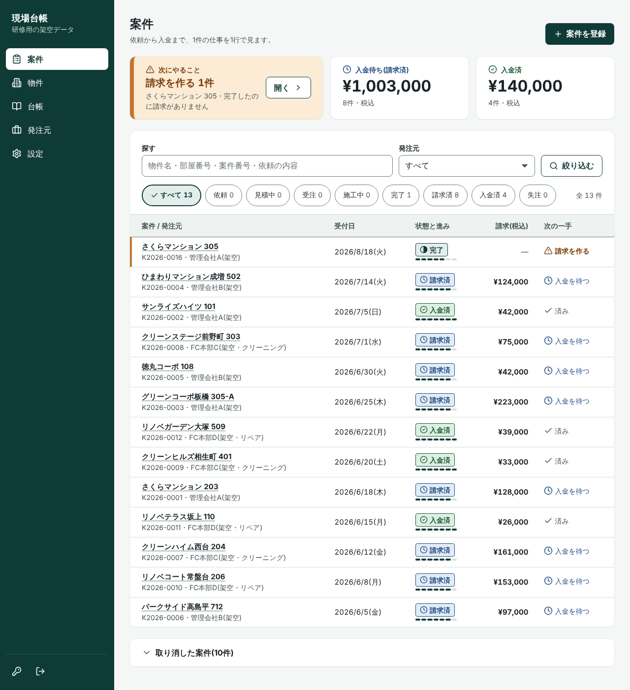
(1) 案件の一覧(PC 1280px)数字の3枚(次にやること・入金待ち・入金済)+いまの表。状態の下に7段の小さな帯、右端の列を「次の一手」に。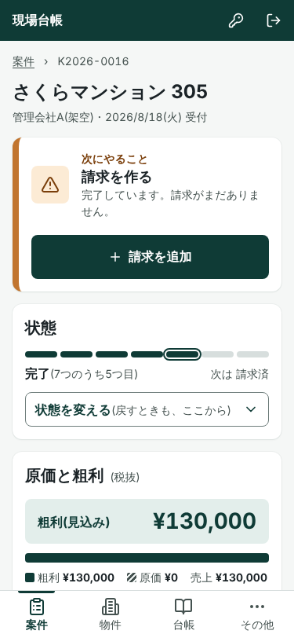
(2) 案件の詳細(スマホ 375px)頭に「次にやること: 請求を作る」と主ボタン。状態は7段の帯1本、粗利は帯グラフつき。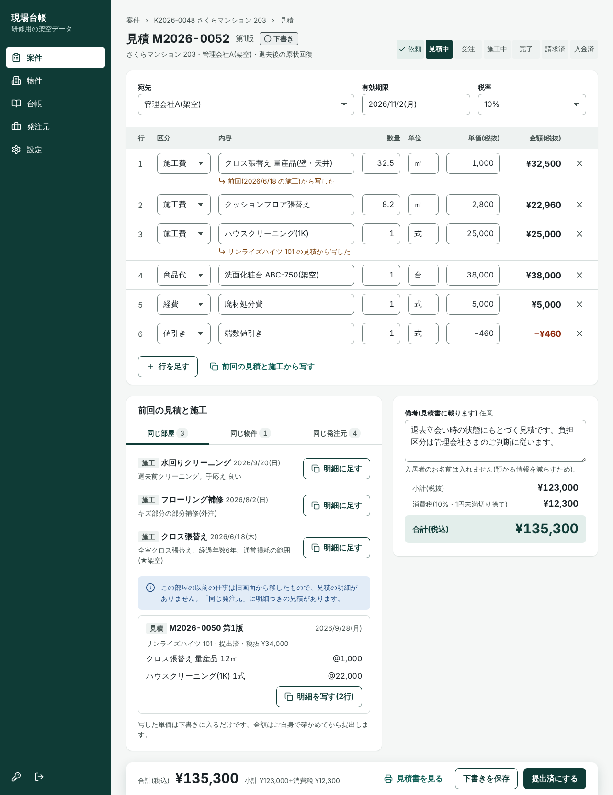
(3) 見積の編集(PC 1280px・下書き)明細は1行=1件の入力の表。合計と操作(見積書を見る・下書きを保存・提出済にする)は画面の下に固定。前回の見積と施工は表の下。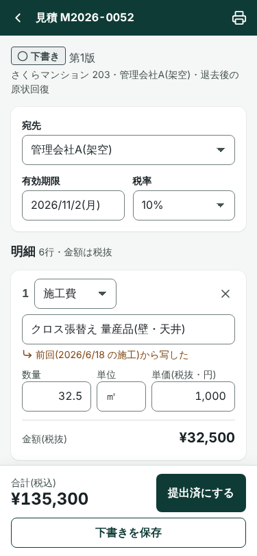
(4) 見積の編集(スマホ 375px・下書き)明細は1件ずつのカード(内容/数量・単位・単価/金額)。合計と「提出済にする」を下に固定。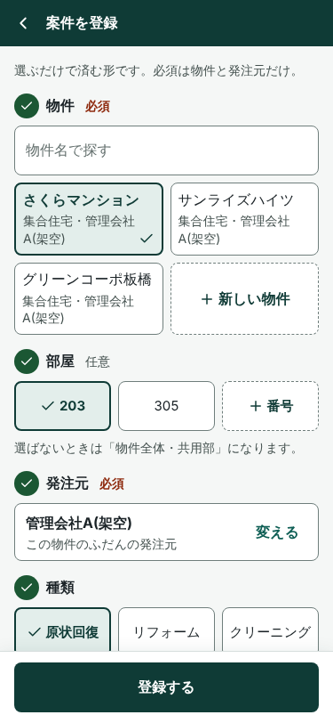
(5) 案件の登録(スマホ 375px)番号つきの質問を上から。済んだ質問は番号が ✓ に変わる。「登録する」を下に固定。数字が先
開いた瞬間に、お金が目に入る。深緑の大きな面に数字、次の一手だけを明るい橙で塗る。
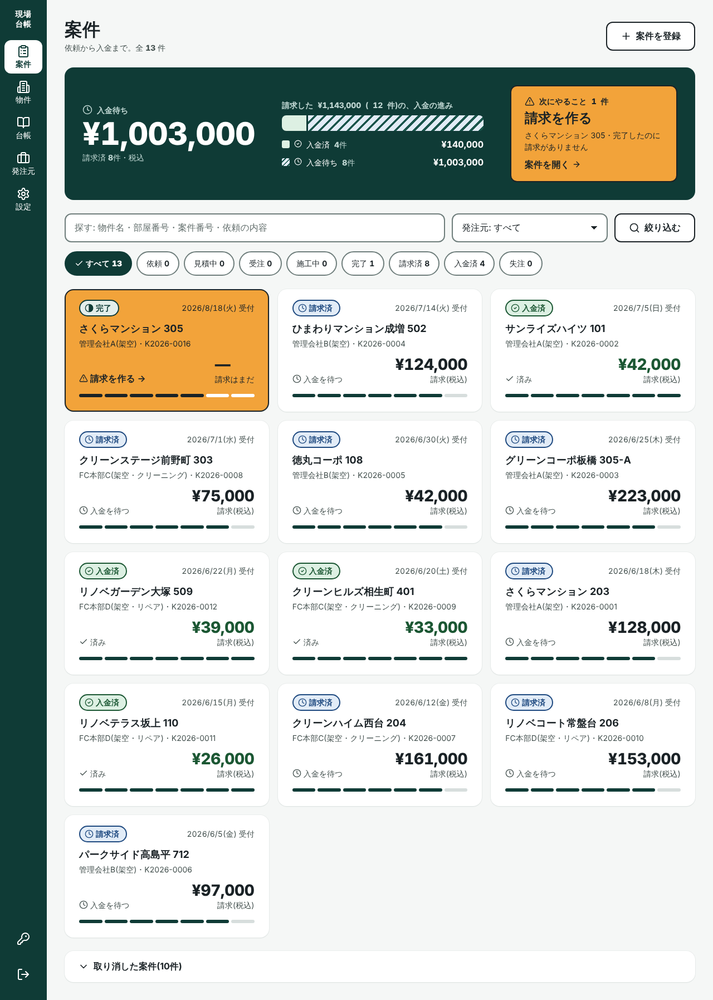
(1) 案件の一覧(PC 1280px)深緑の面に、入金待ち ¥1,003,000(56px)・入金の進みの帯・次にやることの橙の札。案件はカードで、金額が一番大きい。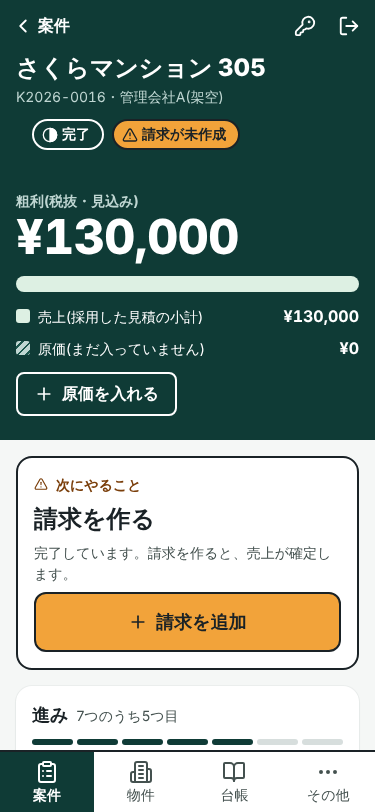
(2) 案件の詳細(スマホ 375px)深緑の面に粗利 48px と売上・原価の帯。そのすぐ下に「請求を追加」の橙のボタン。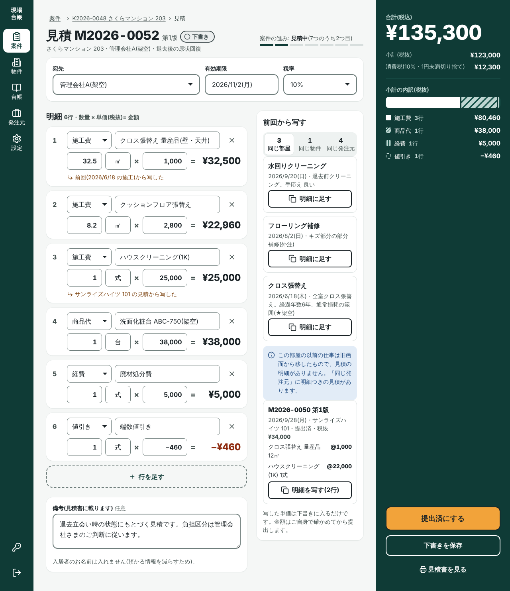
(3) 見積の編集(PC 1280px・下書き)明細は「数量 × 単価 = 金額」の式の形。右に合計の塔(合計 52px・小計の内訳の帯・提出済にする)。前回から写す欄は明細の横。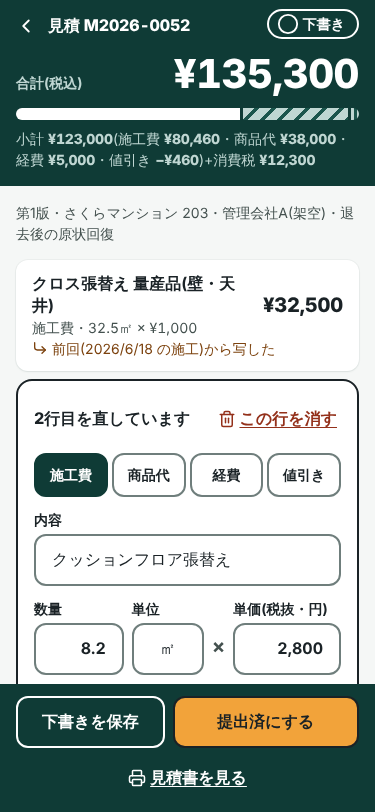
(4) 見積の編集(スマホ 375px・下書き)合計と内訳の帯を上に固定。明細は1行に畳み、直す1行だけ開く。下に「下書きを保存」「提出済にする」。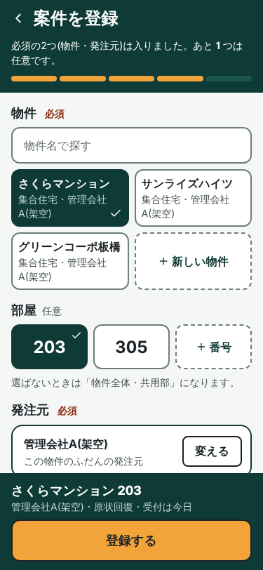
(5) 案件の登録(スマホ 375px)大きなタイルで選ぶ。上に必須の進み、下に「さくらマンション 203・管理会社A(架空)・原状回復」の要約と橙の「登録する」。段取り帳
状態ではなく「次にやること」の順に並べる、紙の帳面。
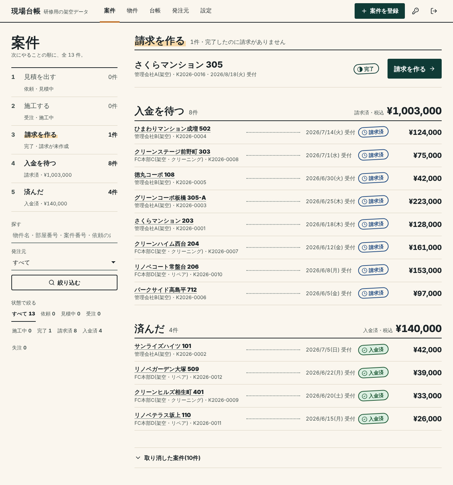
(1) 案件の一覧(PC 1280px)左に段取りの索引(見積を出す 0・施工する 0・請求を作る 1・入金を待つ 8・済んだ 4)と絞り込み。右は束ごとの台帳の行、金額は点線の先。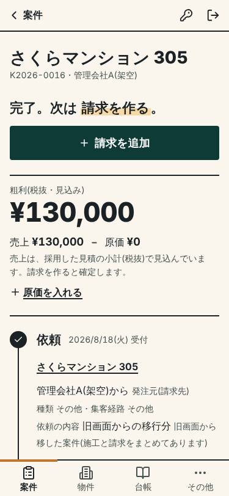
(2) 案件の詳細(スマホ 375px)「完了。次は請求を作る。」の一文と主ボタン。粗利は式(売上 − 原価)。その下は工程の線で、依頼→見積→受注→施工→完了(いまここ)→請求→入金。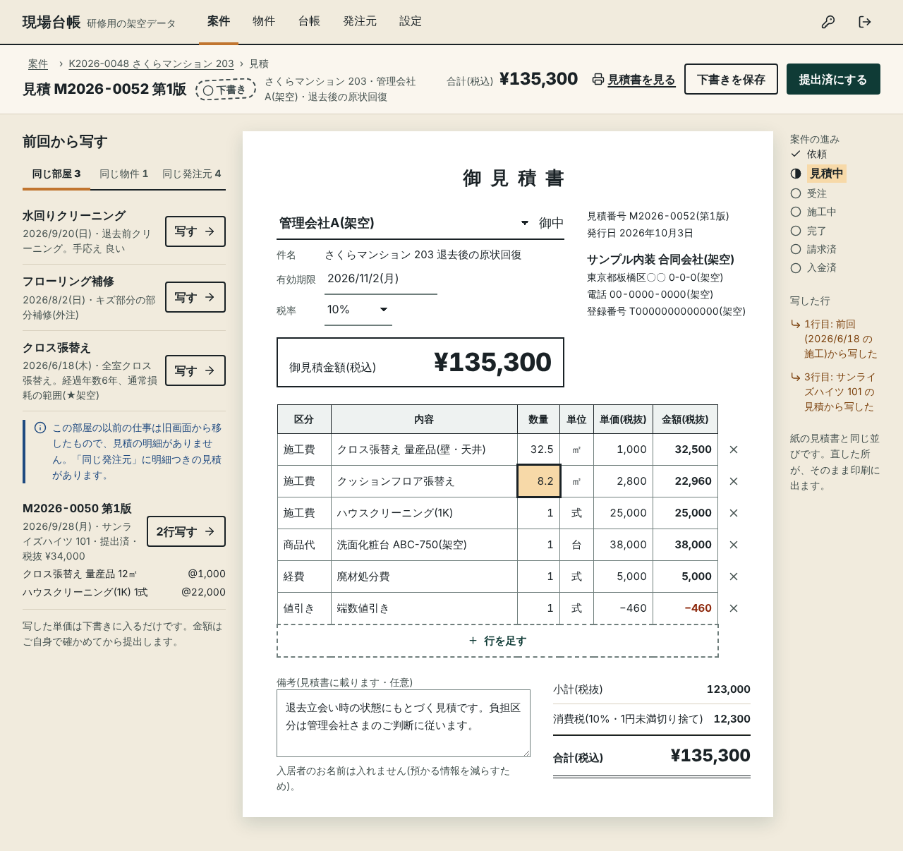
(3) 見積の編集(PC 1280px・下書き)印刷と同じ並びの見積書を、そのまま直す。左に「前回から写す」、右の欄外に案件の進みと写した行。上の帯に合計と操作。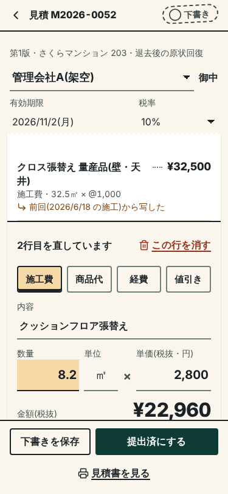
(4) 見積の編集(スマホ 375px・下書き)伝票の形。明細は点線の先に金額、直す1行だけ式の形で開く。合計は二重罫。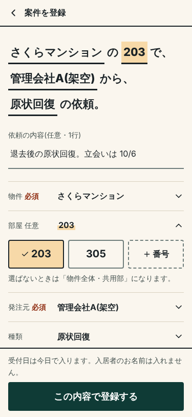
(5) 案件の登録(スマホ 375px)「さくらマンション の 203 で、管理会社A(架空) から、原状回復 の依頼。」の一文。下線の所を押して選び直す。